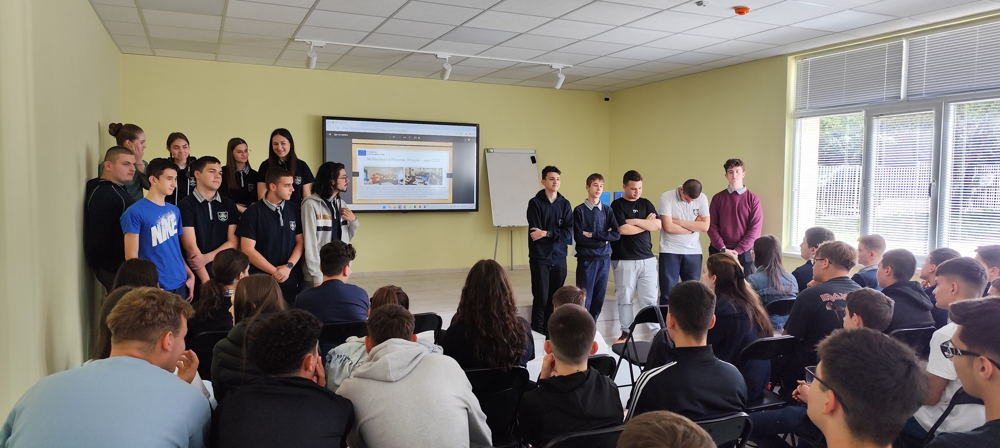
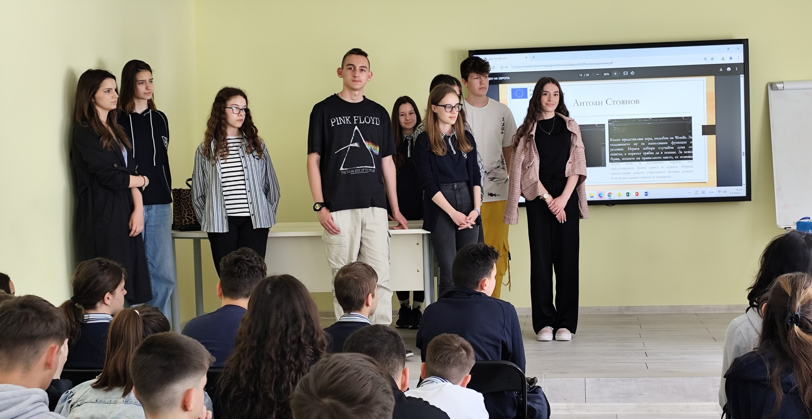
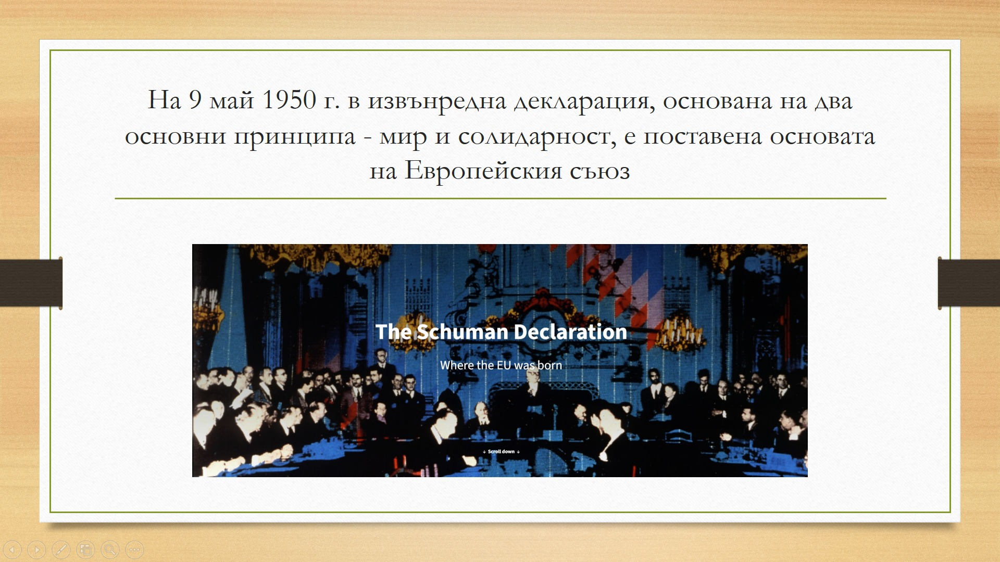
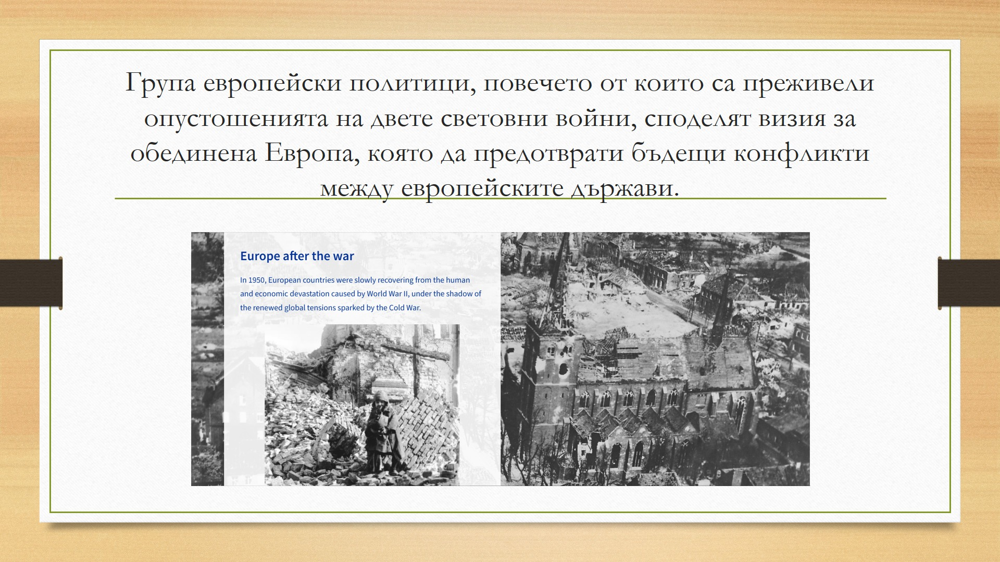

Erasmus Club at PPMG "Acad. Ivan Tsenov marked Europe Day

Erasmus Club at PPMG "Acad. Ivan Tsenov marked the 75th anniversary of signing the Schumann Declaration, which sets the beginning of the European Union, with a meeting to disseminate the results of two current Erasmus projects implemented during the current school year. The event was attended by students from eighth and ninth grade, to whom the Erasmus Club members talked about their involvement in the mobility conducted in Belgium and Italy, the training they underwent there, the experience gained and the contacts made.
Students who took part in the Erasmus Accreditation Mobility, Professional Education Direction demonstrated their projects they have developed as an application of the skills to work with Python programming language gained in their collaboration with Italian hosts. On their part, the students who participated in the Erasmus Accreditation mobility, the School Education Direction shared about their cooperation with teachers, students and pupils from the visiting Belgian university and school. For the audience, the meeting also had a competitive element that stimulated an in-depth perception of the opportunities that the Erasmus+ Program provides to promote international exchange in the fields of school and vocational education, with some of the students walking away with prizes.
The attendees were convinced of the role of the Erasmus+ Program as a continuation of the idea set 75 years ago to bring European nations closer together.
  